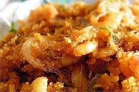

Sambal Kelapa Udang

Bahan-bahan :
- 300 gram udang ukuran sedang, buang kepalanya
- 3 batang serai, ambil putihnya
- 3 buah cabai rawit
- 5 buah cabai merah besar
- 1 cm kunyit
- 1 cm jahe
- 1 sdt gula pasir
- 2 sdt garam
- 1 butir kelapa parut
- 1 lembar daun kunyit, iris tipis
Bumbu halus:
- 5 buah bawang merah
- 4 siung bawang putih
Cara Membuatnya :
- Panaskan minyak secukupnya, tumis bumbu halus hingga harum dan keluar matang.
- Masukkan udang, aduk-aduk hingga berubah warna
- Masukkan kelapa parut dan irisan daun kunyit.
- Aduk-aduk dan masak hingga kelapa agak mengering.
- Angkat dan sajikan dengan nasi putih.